選地區
台北
新北
基隆
桃園
宜蘭
新竹
苗栗
台中
南投
彰化
雲林
嘉義
台南
屏東
花蓮
台東
選風格
美式
歐風
小清新風
渡假風
鄉村風
Black & White
Trap
Neon
所有景點
小雜誌
關於我們
聯絡我們
ＳＨＡＮ ＬＩＳＴ
ʻʻ Choose your style. ’’
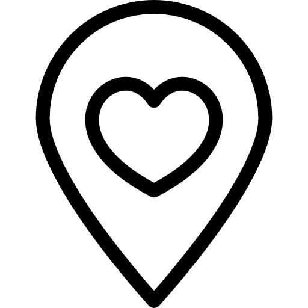
依照地區、風格推薦你好拍的打卡景點
教你什麼角度拍照最好看
教你調出適合的照片色調
RECOMMEND
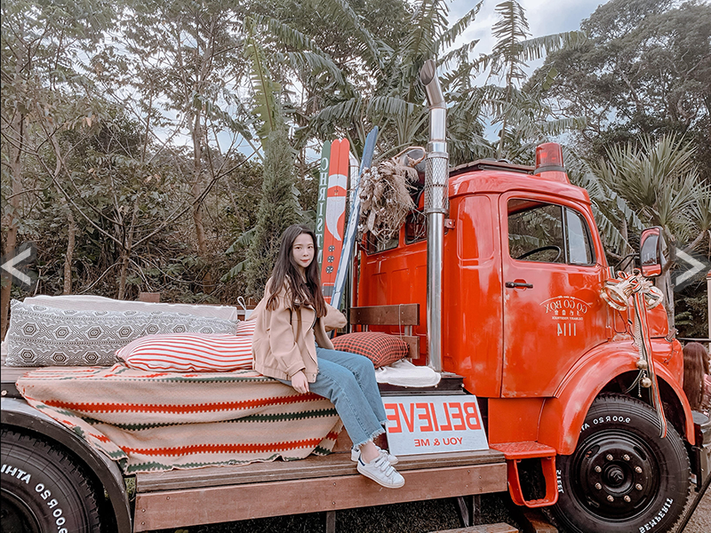
GOGOBOX餐車誌 in 樂灣基地
藍天白雲，綠油油的樹還有可愛的餐車，感受滿滿的渡假氣氛就在桃園大溪的GOGOBOX餐車誌 in 樂灣基地，這裡是台灣少數在戶外很適合拍照的餐車基地，很有美式風格，在戶外配上好天氣調色只要照下面的調色步驟調整保證水噹噹，最好拍的點就是照片中的車，配上陽光會很好看！
☆建議拍攝位置與角度：站在照片中的車子前或是坐在車子上拍照，腳記得要向前延伸。
☆調色如下：使用Adobe Lightroom （Lightroom cc）
曝光Exposure：-0.1
黑色Blacks：-20
紅色Red：飽和度Saturation-10／明度Luminance+13
黃色Yellow：色相Hue-14／明度Luminance+27
綠色Green：色相Hue-18／明度Luminance+50
地址：桃園市大溪區復興路二段138號
# 桃園
# 美式
# 渡假風
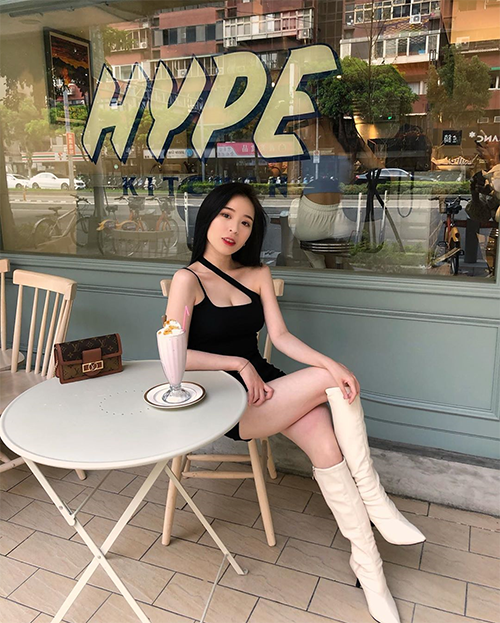
嗨波廚房 HYPE
今年剛開幕的嗨啵廚房最好拍的就是它土耳其綠的門口，配上自然的陽光拍起來超美！
☆建議拍攝位置與角度：坐在門口的位置，拍到整個HYPE才好看。
☆調色如下：使用Adobe Lightroom
# 台北
# 美式
MORE
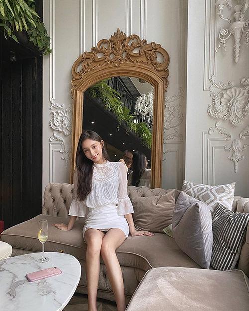
Opium Champagne Bar
Opium是在信義區的酒吧，但早上也有營業，在角落大鏡子前的沙發上拍照很美～
☆建議拍攝位置與角度：坐在鏡子前的沙發，背對鏡子面向陽光怎麼拍都好。
☆調色如下：使用Adobe Lightroom
# 台北
# 歐風
MORE
負壹 Bar
負壹位於大安區，有著現在火紅的霓虹燈，放在IG版面超吸睛，一定要拍！
☆建議拍攝位置與角度：坐在門口的位置，要拍到ㄎㄧㄤ的霓虹燈字～
☆調色如下：使用Adobe Lightroom
# 台北
# Trap
# Neon
MORE
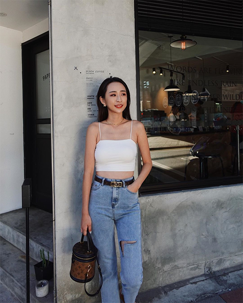
PAPER ST. COFFEE
今年剛開幕的PAPER門口顏色以黑灰為主，喜歡版面乾淨、黑色系的人一定要來拍～
☆建議拍攝位置與角度：站在門口的位置，把腳切掉一點點不拍到太多地板。
☆調色如下：使用Adobe Lightroom...
# 台北
# Black&White
MORE
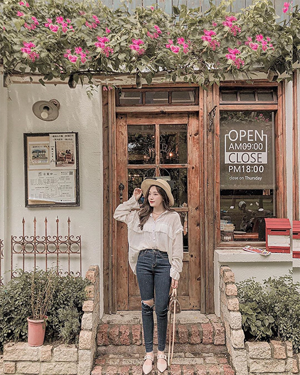
Antique.cafe
Antique走鄉村風，也有出國的感覺呢！喜歡鄉村風的人一定能拍很多美照！
☆建議拍攝位置與角度：站在門口，一定要拍到屋頂的花草，畫面會很好看～
☆調色如下：使用Adobe Lightroom
# 台南
# 鄉村風
# 渡假風
MORE
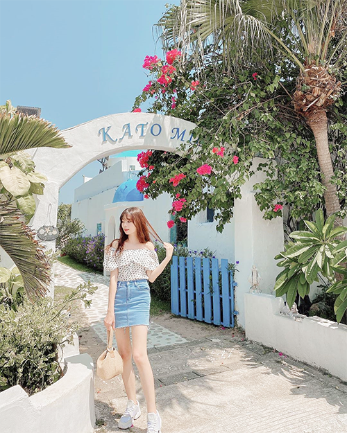
卡托米利庭園咖啡
擁有小希臘之稱的卡托米利庭園咖啡超好拍，不用出國就可以有在希臘的感覺呢！
☆建議拍攝位置與角度：庭院入口拱門必拍，配上花草超有希臘的感覺！
☆調色如下：使用Adobe Lightroom
# 桃園
# 歐風
# 渡假風
MORE
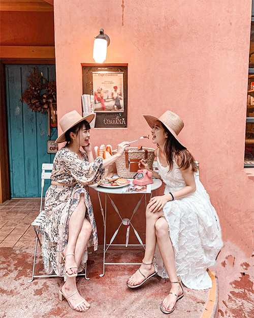
古巴娜咖啡
剛開幕的古巴娜咖啡超有異國風情，配上橘紅色裝潢拍起來色彩豐富很好看！
☆建議拍攝位置與角度：坐在走廊上的白椅上很有置身國外的感覺！
☆調色如下：使用Adobe Lightroom
# 台北
# 渡假風
MORE
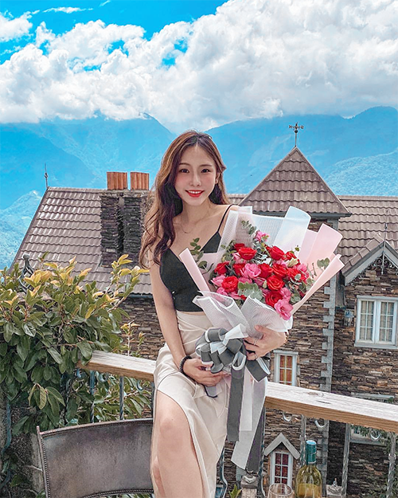
霞飛音樂城堡
國外很紅在美美的陽台上拍照，現在不用出國台灣就有了！陽台配上後面建築物超美～
☆建議拍攝位置與角度：站在或坐在陽台上，從房間拍出去，記得要拍到天空！
☆調色如下：使用Adobe Lightroom
# 南投
# 歐風
# 渡假風
MORE
POPULAR
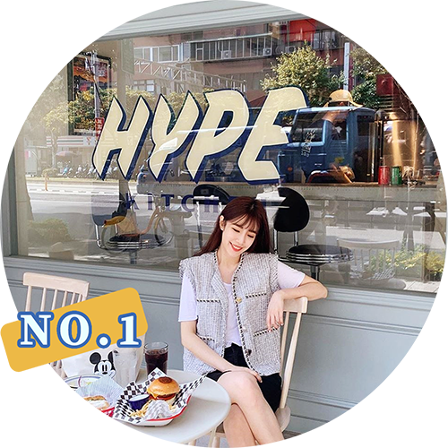
1.嗨波廚房 HYPE
藍天白雲，綠油油的樹還有可愛的餐車，感受滿滿的渡假氣氛就在桃園大溪的GOGOBOX餐車誌 in 樂灣基地，這裡是台灣少數在戶外很適合拍照的餐車基地，很有美式風格，在戶外配上好天氣調色只要照下面的調色步驟調整保證水噹噹，最好拍的點就是照片中
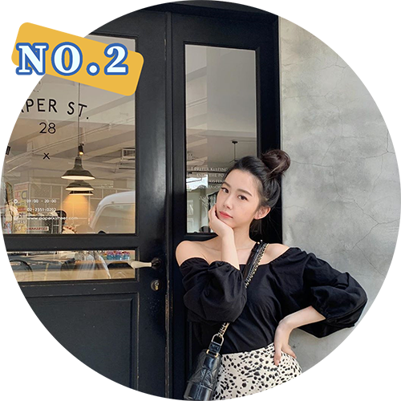
2.PAPER ST. COFFEE
今年在台北華山文創園區剛開幕的PAPER門口顏色以黑灰為主，喜歡版面乾淨、黑色系的人一定要來拍～ 因為裝潢以簡單的顏色為主，所以不管人怎麼拍都會顯得很亮眼很漂亮，顏色也相對得很好調色，喜歡這種風格的人不要錯過囉～
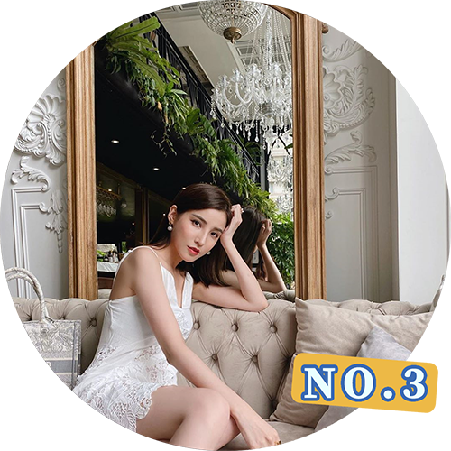
3.Opium Champagne Bar
位於台北101正對面，座落於信義區精華地段的 OPIUM Champagne Bar，以濃厚的法式古典風情為概念，採用大片落地窗， 白天拍照陽光光線照進來超好看，入夜之後室內燈光也相當華麗又漂亮，白天和晚上拍照都可以拍得美美的～